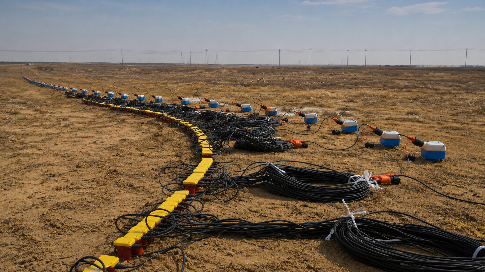

الجيوفيزياء

يعنى تخصص الجيوفيزياء بدراسة باطن الأرض باستخدام المبادئ الفيزيائية والتقنيات الحديثة، بهدف فهم التراكيب الجيولوجية واستكشاف الموارد الطبيعية وتحليل الظواهر الأرضية دون الحاجة إلى الحفر المباشر.
نبذة عن التخصص
يجمع تخصص الجيوفيزياء بين علوم الأرض والفيزياء لدراسة مكونات باطن الأرض وتحليل خصائصها باستخدام الموجات الزلزالية والجاذبية والمغناطيسية والطرق الكهربائية. ويسهم في استكشاف المعادن والطاقة والمياه الجوفية، إضافةً إلى دعم المشاريع الهندسية والبيئية من خلال التقنيات الجيوفيزيائية الحديثة.

لماذا تختار الجيوفيزياء؟
استكشاف باطن الأرض
دراسة ما يوجد أسفل سطح الأرض باستخدام الموجات والقياسات الفيزيائية دون الحاجة إلى الحفر المباشر.
تقنيات حديثة
استخدام أحدث الأجهزة والبرامج لتحليل البيانات الجيوفيزيائية وتفسيرها بدقة.
فرص مهنية متنوعة
المشاركة في مشاريع التعدين والطاقة والبنية التحتية والاستكشاف الجيولوجي.
تحليل البيانات
تنمية مهارات تحليل البيانات واستخلاص النتائج لدعم الدراسات والمشروعات المختلفة.
ماذا سيدرس الطالب؟
العلوم الأساسية
الرياضيات والفيزياء والكيمياء والعلوم الأساسية المرتبطة بعلوم الأرض.
المقررات الجيوفيزيائية
الزلازل والجاذبية والمغناطيسية والطرق الكهربائية والكهرومغناطيسية.
التطبيقات الميدانية
التدريب على جمع البيانات الجيوفيزيائية واستخدام أجهزة القياس في المواقع المختلفة.
معالجة البيانات
تحليل النتائج باستخدام البرامج المتخصصة وإعداد الخرائط والتقارير الفنية.
المهارات المكتسبة
تحليل البيانات الجيوفيزيائية
اكتساب القدرة على تحليل وتفسير القياسات الجيوفيزيائية واستخلاص النتائج العلمية.
استخدام أجهزة القياس
التدرب على تشغيل الأجهزة الجيوفيزيائية المستخدمة في الدراسات والاستكشافات الميدانية.
إعداد الخرائط
إعداد وتفسير الخرائط الجيوفيزيائية وربطها بالبيانات الجيولوجية.
استخدام البرامج المتخصصة
استخدام برامج معالجة البيانات والنمذجة الجيوفيزيائية وإعداد التقارير الفنية.
العمل الميداني
تنفيذ القياسات الميدانية والمشاركة في أعمال المسح والاستكشاف في المواقع المختلفة.
العمل الجماعي
التعاون مع فرق العمل في المشاريع البحثية والهندسية وإدارة البيانات بكفاءة.